Adding missing derivatives of builtins to ADiMat
In this tutorial, we will explore how to add derivative support for builtin functions that have not yet been handled by us, the developers of ADiMat. We strongly believe that, by now, ADiMat covers a relatively large range of builtin functions. In particular, ADiMat does offer derivative support for all commonly used builtin functions. However, there are so many builtin functions in MATLAB that we cannot treat them all at once. Instead, we handle missing builtins on a case-by-case basis. That is, when ADiMat reports an error about a missing builtin function, please contact us, preferably via the mailing list adimat-users@lists.sc.informatik.tu-darmstadt.de. We will then strive to add derivative support for the functions your code uses as quickly as possible.
In this tutorial, we explain how you can help yourself in this situation. More precisely, we show how you can add this derivative support to your local installation of ADiMat. This requires (i) that you know the derivative(s) of the builtin in question and (ii) that you manually write code that can compute these derivative(s). What we explain here is how to hook up this manually written code with the ADiMat differentiation process.
Once you have done these steps for some builtin function, we would still be happy to hear from you. So, please let us know and we will integrate this missing builtin into ADiMat making it available for all users.
Contents
- An illustrating example: The builtin function quad
- ADiMat's handling of missing builtins in admDiffFor
- ADiMat's handling of missing builtins in admDiffVFor and admDiffRev
- The analytic derivative of quad
- Adding support for a derivative in admDiffFor
- Adding support for a derivative in admDiffVFor
- Adding support for a derivative in admDiffRev
- Overriding existing derivative declarations
- Specifying derivative declarations for unknown functions
- Treating undefined derivatives
- Summary
An illustrating example: The builtin function quad
Let's consider the builtin quad as an example. It has not yet been added to the derivative database of ADiMat. More precisely, it is listed there as a builtin for which the derivative is unknown. This means that ADiMat knows that the builtin exists, otherwise you would get an unbound identifier error. This case will be treated in a different example. So, let's assume that you wrote some function that calls the builtin quad and that you want to differentiate this function. Here is an example where this function is called intsin:
type intsin
function z = intsin(a, b) z = quad(@sin, a, b);
This function uses quad to numerically approximate the area under the sine function between points a and b, which are given as parameters. Let us first describe what happens in such a situation. When you try to differentiate this function with ADiMat, you will receive errors, which we will explain in detail in the following sections.
ADiMat's handling of missing builtins in admDiffFor
With admDiffFor you will get the following error message during the transformation process.
J = admDiffFor(@intsin, 1, 1, 3)
Differentiated function g_intsin does not exist.
Differentiating function intsin in forward mode (FM) to produce
g_intsin...
Creating ADiMat status directory .adimat
ERROR: './intsin.m' at 2,11: the builtin quad has a derivative, but it has not been implemented yet!
Warning: system command: /home/joy/sw/amd64-gcc/adimat-0.6.0/bin/admwrap -K
"/opt/matlab/R2012a" "/home/joy/sw/amd64-gcc/adimat-0.6.0/bin/admproc-bin" -M
".adimat/intsin.admdeps" -F "intsin.m"
generated ERRORs
message is: ERROR: './intsin.m' at 2,11: the builtin quad has a derivative, but
it has not been implemented yet!
Differentiation took 0.071344 s.
J =
0 0
It is important to understand that, after the error message of the transformation process, the (wrong) derivative code is also executed. The effect of this execution is that the partial derivative of the builtin is zero. In our simple example function, this means that you get a zero Jacobian J. In more complex and realistic codes however, the call to quad will usually correspond to just a single edge in the computational graph. The computational graph consists of many edges that all contribute to the final derivative result. The zero Jacobian of quad then means the following: The contribution of that single edge to the final derivative is ignored while the contributions of all other edges are accumulated correctly. This can lead to rather subtle errors that are difficult to debug. This is why you have to pay close attention whether this message occurs. You should always check ADiMat's derivative results for correctness, for example against finite differences, cf. our corresponding tutorial.
ADiMat's handling of missing builtins in admDiffVFor and admDiffRev
With admDiffVFor and admDiffRev the situation is a little bit easier. You will get a transformation error message as just discussed. However, ADiMat will also produce code that will not run out of the box. That is, ADiMat will execute the (wrong) derivative code but will also report an error at run time. So, you should be safe even if you overlook the error message of the transformation process. With admDiffVFor you will get the following:
try J = admDiffVFor(@intsin, 1, 1, 3) catch ME errmsg = ME.message end
Differentiated function d_intsin does not exist. Differentiating function intsin in (new) forward mode (FM) to produce d_intsin... ./intsin.m:2:11: note: The argument 1 given to quad is not active while the parameter is: A zero derivative object will have to be generated. ./intsin.m:2:11: warning: (this variant of) the builtin quad has a derivative, but it has not been implemented yet Differentiation took 0.546317 s. errmsg = Undefined function 'adimat_diff_quad' for input arguments of type 'function_handle'.
The result is very similar with admDiffRev:
try J = admDiffRev(@intsin, 1, 1, 3) catch ME errmsg = ME.message end
Differentiated function a_intsin does not exist. Differentiating function intsin in reverse mode (RM) to produce a_intsin... Differentiation took 0.638398 s. errmsg = Undefined function 'adimat_a_quad_011' for input arguments of type 'function_handle'.
As you see, in both cases, the transformed code attempts to call a function which does not exist in ADiMat's runtime environment.
The analytic derivative of quad
Let us now derive the derivative of quad analytically. The call quad(f,a,b) evaluates the integral of a function 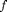 in the interval between  and
and  . This value is well known to be
. This value is well known to be  , where
, where  is the antiderivative of . That is, is a function whose derivative is . Since Matlab cannot know for a general given function , the function quad computes the result numerically by Riemann sums.
is the antiderivative of . That is, is a function whose derivative is . Since Matlab cannot know for a general given function , the function quad computes the result numerically by Riemann sums.
However, from the mathematical background, we see immediately that the derivative of quad(f,a,b) is 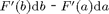, where 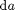 and  are the derivatives of and , respectively. Since, by definition, the derivative of is given by , we immediately arrive at 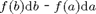. So, fortunately, we only need the given function to compute the derivative of quad.
are the derivatives of and , respectively. Since, by definition, the derivative of is given by , we immediately arrive at 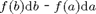. So, fortunately, we only need the given function to compute the derivative of quad.
In the forward mode admDiffFor and admDiffVFor, the derivatives and come out of the differentiation process up to the point where quad(fun,a,b) is called in your code. In the reverse mode admDiffRev, the situation is a little bit different.
In our example case and can be assumed to be 1. We can use the finite difference driver of ADiMat to compute the derivative and check our analytic result:
J = admDiffFD(@intsin, 1, 1, 3) [ -sin(1) sin(3) ]
J = -0.8415 0.1411 ans = -0.8415 0.1411
What we can immediately do with our result is to write two functions which return the partial derivatives of quad w.r.t. a and b, resp.
type partial_quad_a type partial_quad_b
function dqda = partial_quad_a(fun, a, b) dqda = -fun(a); function dqdb = partial_quad_b(fun, a, b) dqdb = fun(b);
Adding support for a derivative in admDiffFor
To tell the admDiffFor driver of ADiMat to inject the right code when differentiating quad, you have to use the BMFUNC directives, using the scripting language described in Bischof et al. (2005) "A Macro Language for Derivative Definition in ADiMat". These have to be added to the source code of intsin, producing a modified file intsin_bmfunc.m:
type intsin_bmfunc.m
function z = intsin_bmfunc(a, b) %ADiMat BMFUNC $$ = quad($1, $2, $3) DIFFTO partial_quad_a($1, $2, $3) .* $@2 + partial_quad_b($1, $2, $3) .* $@3 %ADiMat BMFUNC $$ = partial_quad_a($1, $2, $3) NODIFF %ADiMat BMFUNC $$ = partial_quad_b($1, $2, $3) NODIFF z = quad(@sin, a, b);
The directive BMFUNC declares that a call to quad with one output and three input parameters ($$ = quad($1,$2,$3)) differentiates to (DIFFTO) the following expression. Here, the variables $1, $2, and $3 are replaced by the first, second, and third function argument of quad. So, in our example, $2 corresponds to a and $3 to b, while $1 stands for @sin. Furthermore, $@2 and $@3 refer to the derivatives of $2 and $3, respectively, representing the quantities and in our mathematical derivation above. Putting it all together we see that the DIFFTO expression is nothing but the total differential of the call to quad.
When we now apply admDiffFor to the new function containing the directive, we get the correct result:
J = admDiffFor(@intsin_bmfunc, 1, 1, 3)
Differentiated function g_intsin_bmfunc does not exist. Differentiating function intsin_bmfunc in forward mode (FM) to produce g_intsin_bmfunc... Differentiation took 0.081025 s. J = -0.8415 0.1411
The further two BMFUNC NODIFF directives suppress some nagging warning messages, since ADiMat also wants to know about the two functions used in the declaration for quad.
Adding support for a derivative in admDiffVFor
In the case of admDiffVFor, the situation is a little bit simpler. You just have to implement the missing function, namely adimat_diff_quad. ADiMat produces a generic call to that function in the differentiated code. The corresponding statement in the transformed function d_intsin is:
d_z = adimat_diff_quad(d_zeros(@sin), @sin, d_a, a, d_b, b);
Here, the argument sequence is constructed so that the derivative of an argument is placed before its associated argument. The first argument, the function handle, is differentiated as well because ADiMat conservatively assumes that all arguments may be active, i.e., relevant for differentiation.
In order to implement the missing function, you have to know about the data layout of the derivative values used by admDiffVFor. When a variable x holds an array with  dimensions 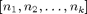, then the corresponding derivative variable d_x holds an array with
dimensions 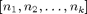, then the corresponding derivative variable d_x holds an array with  dimensions
dimensions ![$[n_{\rm dd}, n_1, n_2, \dots, n_k]$](add_missing_derivative_eq01425.png) , where
, where  is the number of directional derivatives. Sometimes you can treat all directional derivatives at once, but in general you have to loop over 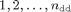 and handle each directional derivative separately. The 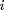-th directional derivative can be extracted from d_x by the expression reshape(d_x(i,:), size(x)). The value d_x(i,:) is the vector of all components in the -th slice along the first dimension, and with reshape we bring that into the same shape that x has.
is the number of directional derivatives. Sometimes you can treat all directional derivatives at once, but in general you have to loop over 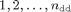 and handle each directional derivative separately. The 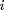-th directional derivative can be extracted from d_x by the expression reshape(d_x(i,:), size(x)). The value d_x(i,:) is the vector of all components in the -th slice along the first dimension, and with reshape we bring that into the same shape that x has.
Putting it all together, the missing function should be something like this:
copyfile magic_hat/adimat_diff_quad.m . type adimat_diff_quad
function [d_r, r] = adimat_diff_quad(d_fun, fun, d_a, a, d_b, b)
% compute the function value (optional)
r = quad(fun, a, b);
% initialize the derivative result (could also use d_zeros(1) here)
d_r = d_zeros(r);
% get number of directional derivatives from one of the arguments
ndd = size(d_a, 1);
% precompute the partials
p1 = partial_quad_a(fun, a, b);
p2 = partial_quad_b(fun, a, b);
for i=1:ndd
dd = p1 * reshape(d_a(i,:), size(a)) + p2 * reshape(d_b(i,:), size(b));
d_r(i,:) = dd(:).';
end
The code shown above implements the general approach that will have to be used in most cases. However, in the case of quad, we know that a and b and also the result are scalars. So, the reshape operations are superfluous and the code could be greatly simplified.
Now, verify that admDiffVFor also returns the expected result:
J = admDiffVFor(@intsin, 1, 1, 3)
J = -0.8415 0.1411
Adding support for a derivative in admDiffRev
In the case of admDiffRev, the situation is similar to admDiffVFor and in some respect even simpler. It is simpler because by virtue of ADiMat's derivative classes, you can handle the derivative variables much more naturally. When there are several directional derivatives, these are hidden inside the derivative class objects.
Recall that we differentiate the statement
z = quad(@sin, a, b);
contained in intsin. Let's look at the generated reverse mode code in a_intsin which includes the following statements:
[tmpadjc2 tmpadjc3] = adimat_a_quad_011(@sin, a, b, a_z); a_a = adimat_adjsum(a_a, tmpadjc2); a_b = adimat_adjsum(a_b, tmpadjc3);
There are two statements for updating the adjoint of each of the active arguments, a_a and a_b. The adjoint increment shall be returned by the calls to a_quad. It receives as the first argument the adjoint of the call's result, which was z. The second argument is an integer describing the adjoint of which of the parameters shall be returned. Then follow the arguments of the original call.
The adjoint of the second parameter a is obtained by multiplying the a_z with the partial w.r.t. a, and likewise for b. Hence the missing runtime function a_quad could be implemented as follows:
copyfile magic_hat/adimat_a_quad_011.m . type adimat_a_quad_011
function [adj_a adj_b] = adimat_a_quad_011(fun, a, b, adj) adj_a = adj .* partial_quad_a(fun, a, b); adj_b = adj .* partial_quad_b(fun, a, b);
Verify that admDiffRev now also returns the expected result:
J = admDiffRev(@intsin, 1, 1, 3)
J = -0.8415 0.1411
Overriding existing derivative declarations
The same techinques shown here can also be used to override existing derivative rules in ADiMat.
With admDiffFor, use BMFUNC directives. For example, you can override ADiMat's handling of sin with a directive like this:
%ADiMat BMFUNC $$ = sin($1) DIFFTO times(cos($1), $@1)
With admDiffVFor, every call to a builtin foo is handled by a runtime function adimat_diff_foo. You can find this runtime function in your ADiMat installation and just change it.
With admDiffRev, runtime functions are also used often, and you can make changes there. However, there is currently no way to change the actual derivative rules of the reverse mode. So if ADiMat generates the adjoint computation inline, you are out of luck, unless you patch the generated code.
Specifying derivative declarations for unknown functions
The procedure for adding derivative support is a little bit different when the function in question is not already contained in ADiMat's derivative database. This may happen with new builtin functions, functions from third party toolboxes, or with MEX functions in your code.
As an example, let's consider a MEX function cquad that we created and that is supposed to be a simple replacement for the builtin quad.
type cquad.c
/*==========================================================
* cquad.c - example MEX function for an ADiMat tutorial
* Copyright 2013 Johannes Willkomm
*
* This file is based on the example file from the MATLAB
* documentation:
*
* arrayProduct.c - example in MATLAB External Interfaces
*
* Multiplies an input scalar (multiplier)
* times a 1xN matrix (inMatrix)
* and outputs a 1xN matrix (outMatrix)
*
* The calling syntax is:
*
* outMatrix = arrayProduct(multiplier, inMatrix)
*
* This is a MEX-file for MATLAB.
* Copyright 2007-2008 The MathWorks, Inc.
*
*========================================================*/
/* $Revision: 1.1.10.2 $ */
#include "mex.h"
#include <math.h>
double const tolerance = 1e-4;
long ninter;
double evalFunction(double x, mxArray const *funPtr) {
mxArray *lhs[1];
mxArray *rhs[2];
rhs[0] = (mxArray*) funPtr;
rhs[1] = mxCreateDoubleScalar(mxREAL);
double *xPtr = mxGetPr(rhs[1]);
*xPtr = x;
int const cres = mexCallMATLAB(1, lhs, 2, rhs, "feval");
if (cres != 0) {
mexErrMsgIdAndTxt("ADiMat:examples:cquad:evalFailed", "feval failed");
}
double const res = mxGetScalar(lhs[0]);
mxDestroyArray(rhs[1]);
return res;
}
/* The computational routine */
void cquad(double a, double b, double *result, mxArray const *funPtr, double fx0) {
++ninter;
double const dx = (b - a);
double const x05 = a + dx * 0.5;
double const fx05 = evalFunction(x05, funPtr);
double res;
if (fabs(fx05 - fx0) / fx0 > tolerance) {
double s1, s2;
cquad(a, x05, &s1, funPtr, fx0);
cquad(x05, b, &s2, funPtr, fx05);
*result = s1 + s2;
} else {
*result = fx05 * dx;
}
}
/* The gateway function */
void mexFunction( int nlhs, mxArray *plhs[],
int nrhs, const mxArray *prhs[])
{
double left_bound, right_bound;
double *result;
/* check for proper number of arguments */
if(nrhs!=3) {
mexErrMsgIdAndTxt("ADiMat:examples:cquad:nrhs","Three inputs required.");
}
if(nlhs!=1) {
mexErrMsgIdAndTxt("ADiMat:examples:cquad:nlhs","One output required.");
}
/* check that the first argument is a funtion vector TBD */
if(mxGetClassID(prhs[0]) != mxFUNCTION_CLASS) {
mexErrMsgIdAndTxt("ADiMat:examples:cquad:notFunction","First input must be a function handle.");
}
/* make sure the first and second input arguments are scalar */
if( !mxIsDouble(prhs[1]) ||
mxIsComplex(prhs[1]) ||
mxGetNumberOfElements(prhs[1])!=1 ) {
mexErrMsgIdAndTxt("ADiMat:examples:cquad:notScalar","Second input must be a scalar.");
}
if( !mxIsDouble(prhs[2]) ||
mxIsComplex(prhs[2]) ||
mxGetNumberOfElements(prhs[2])!=1 ) {
mexErrMsgIdAndTxt("ADiMat:examples:cquad:notScalar","Third input must be a scalar.");
}
/* get the value of the left integral boundary */
left_bound = mxGetScalar(prhs[1]);
/* get the value of the right integral boundary */
right_bound = mxGetScalar(prhs[2]);
/* create the output matrix */
plhs[0] = mxCreateDoubleScalar(mxREAL);
result = mxGetPr(plhs[0]);
double const fx0 = evalFunction(left_bound, prhs[0]);
/* call the computational routine */
cquad(left_bound, right_bound, result, prhs[0], fx0);
}
Compile the MEX function.
mex cquad.c
Warning: You are using gcc version "4.9.1-11)". The version
currently supported with MEX is "4.4.6".
For a list of currently supported compilers see:
http://www.mathworks.com/support/compilers/current_release/
Let's assume further that you execute cquad in a function called cintsin.
type cintsin
function z = cintsin(a, b) z = cquad(@sin, a, b);
When you try to differentiate this function with ADiMat, you will get transformation errors regarding the unbound identifier cquad, because ADiMat does not know that function and since it is a MEX function it cannot parse and differentiate it.
Using the BMFUNC directive you can declare the identifier cquad and also specify the derivative rule, although that will only be used by admDiffFor.
copyfile magic_hat/cintsin_bmfunc.m cintsin.m type cintsin
function z = cintsin(a, b) %ADiMat BMFUNC $$ = cquad($1, $2, $3) DIFFTO partial_quad_a($1, $2, $3) .* $@2 + partial_quad_b($1, $2, $3) .* $@3 %ADiMat BMFUNC $$ = partial_quad_a($1, $2, $3) NODIFF %ADiMat BMFUNC $$ = partial_quad_b($1, $2, $3) NODIFF z = cquad(@sin, a, b);
Now you can already use the modified function with admDiffFor:
J = admDiffFor(@cintsin, 1, 1, 3)
Differentiated function g_cintsin does not exist. Differentiating function cintsin in forward mode (FM) to produce g_cintsin... Differentiation took 0.0828 s. J = -0.8415 0.1411
For admDiffVFor and admDiffRev the procedure is now the same as before. In this case we can reuse the functions we created above:
copyfile adimat_diff_quad.m adimat_diff_cquad.m copyfile adimat_a_quad_011.m a_cquad_011.m J = admDiffVFor(@cintsin, 1, 1, 3) J = admDiffRev(@cintsin, 1, 1, 3)
Differentiated function d_cintsin does not exist. Differentiating function cintsin in (new) forward mode (FM) to produce d_cintsin... ./cintsin.m:5:12: warning: (this variant of) the builtin cquad has a derivative, but it has not been implemented yet Differentiation took 0.534691 s. J = -0.8415 0.1411 Differentiated function a_cintsin does not exist. Differentiating function cintsin in reverse mode (RM) to produce a_cintsin... Differentiation took 0.659991 s. J = -0.8415 0.1411
Treating undefined derivatives
At some points the derivative of a builtin may be undefined. This may include points where the original function is well defined. For example consider the derivative of sqrt at 0 or the derivative 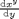 at  .
.
We recommend that you emit a warning in these cases that clearly states the issue. The other question is what value should be returned as the derivative value. In some cases 0 and in others NaN may be reasonable or preferable. Either directly place these values in the derivative in the runtime function or you can consider using the function adimat_missing_derivative_value for that purpose, which allows the user to choose his preference (globally).
Summary
If you want to apply ADiMat to a code that uses some function whose derivative support in ADiMat is currently missing, there is the option to specify the corresponding derivative to ADiMat. This tutorial demonstrates how to add these given derivative information to ADiMat. The procedure is different for the following two classes of drivers. For the admDiffFor driver, the definition of derivatives is carried out by a macrolanguage. For the admDiffVFor and admDiffRev drivers, the derivatives are implemented explicitly via functions whose calling sequence is predetermined by ADiMat. The same techniques may also be used to override existing derivative declarations in ADiMat.